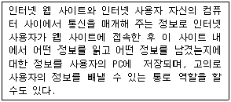
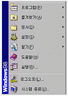
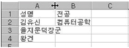
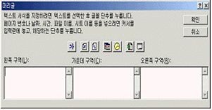
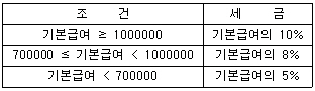
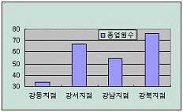
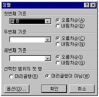
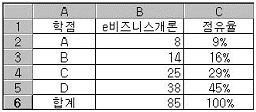
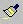

컴퓨터활용능력-3급(폐지) (2004-02-15 기출문제)
1과목: 컴퓨터 일반
1. 다음 중 컴퓨터의 처리 속도 단위에 대한 설명으로 가장 옳지 않은 것은?
- ms = 10-3sec
- μs = 10-6sec
- fs = 10-9sec
- ps = 10-12sec
(정답률: 85%)

2. 다음의 한글 Windows 98에서의 디스플레이 등록 정보에 대한 설명 중 가장 옳지 않은 것은?
- 바탕화면의 등록정보를 선택하면 디스플레이 등록 정보를 확인할 수 있다.
- 디스플레이 등록 정보에서는 화면 배색 및 배경 화면을 고칠 수 있다.
- 디스플레이 등록 정보의 설정에서는 색상 및 해상도를 조정할 수 있다.
- 디스플레이 등록 정보에서는 마우스 포인터나 커서 모양을 고칠 수 있다.
(정답률: 83%)
3. 전원이 끊어져도 저장 데이터는 그대로 보관되는 반도체 메모리로 디지털 카메라, MP3 플레이어, 개인용 정보단말기, 휴대 전화기 등에 널리 사용되는 메모리는?
- 캐시 메모리(Cache Memory)
- 가상 메모리(Virtual Memory)
- 플래시 메모리(Flash Memory)
- 다이나믹 메모리(Dynamic Memory)
(정답률: 90%)
4. 다음 중 인터넷 서비스에 대한 설명으로 잘못된 것은?
- 전자우편 : E-mail이라고 하며 다른 인터넷 사용자들과 편지를 주고받을 수 있는 서비스이다.
- FTP : 파일전송 프로토콜(File Transfer Protocol)의 약자로 인터넷에서 파일을 송수신할 때 사용되는 서비스이다.
- Telnet : 멀리 떨어진 곳에 위치한 호스트 컴퓨터에 접속할 때 사용하는 서비스이다.
- Usenet : 뉴스그룹이라 하고 새로운 뉴스를 주로 취급하며 인터넷 신문 사이트에서 제공하는 뉴스 정보를 의미한다.
(정답률: 62%)
5. 한글 Windows 98의 미디어재생기를 이용하여 재생할 수 있는 파일 형태가 아닌 것은?(실제 시험에서는 1,2번을 정답 처리한 문제 입니다. 여기서는 2번을 정답처리 합니다.)
- GIF
- PCX
- AVI
- WAV
(정답률: 76%)
6. 다음 중 컴퓨터의 종류에 대한 설명으로 잘못된 것은?
- 기능이 개인용 컴퓨터보다 한 단계 높으면서 주로 그래픽이나 공학 시뮬레이션에 사용되며 크기는 개인용 컴퓨터 정도인 컴퓨터를 메인 프레임이라 한다.
- 슈퍼컴퓨터는 초대형 컴퓨터라고도 하며 인공위성 제어, 기상예측, 시뮬레이션 처리 등 특수 분야에 사용된다.
- 하이브리드 컴퓨터는 아날로그와 디지털 컴퓨터의 장점을 결합하여 만든 컴퓨터이다.
- 사회 각 분야에서 광범위한 목적으로 사용될 수 있도록 제작된 컴퓨터를 범용 컴퓨터라 한다.
(정답률: 59%)
7. 한글 Windows 98의 바탕화면에 있는 아이콘에 대한 다음 설명 중 가장 옳지 않은 것은?
- 프로그램 아이콘은 응용프로그램을 표시하는 것이다.
- 바로 가기 아이콘은 어디서나 실행할 수 있도록 연결(link)만 담당한다.
- 프로그램 아이콘을 지워도 프로그램 자체에는 아무 손상이 없다.
- 바로 가기 아이콘을 지워도 프로그램 자체에는 아무 손상이 없다.
(정답률: 65%)
8. 다음 중 유사시에 대비하여 컴퓨터에서 중요한 자료들을 다른 기억장치에 저장해 놓은 것을 의미하는 용어로 가장 적절한 것은?
- 복원
- 백업
- 저장
- 클립보드
(정답률: 86%)
9. 컴퓨터 부팅 후, 한글 Windows 98이 시작(Start-up)될 때 자동으로 프로그램이 실행되게 하려면 실행 프로그램의 아이콘을 어디에 복사해 두면 되는가?
- 시작프로그램
- 보조프로그램
- 즐겨찾기
- 설정
(정답률: 82%)
10. 다음 중 한글 Windows 98에서 활성 창 닫기 방법으로 가장 적절하지 않은 것은?
- 창의 제목 막대 왼쪽에 있는 '제어 메뉴 아이콘'을 더블클릭하면 해당 창이 닫힌다.
- 닫기 버튼 (X 표시)을 클릭하면 해당 창이나 대화상자가 닫힌다.
- Alt+F4 키를 누르면 현재 작업중인 활성 창이 닫힌다.
- Ctrl+Alt+Del 키를 누르면 현재 작업중인 활성 창이 신속히 닫힌다.
(정답률: 66%)
11. 한글 Windows 98에서 파일 관리에 대한 다음 설명 중 가장 옳지 않은 것은?
- 같은 폴더 내에 이름이 같은 여러 개의 파일을 만들 수 있다.
- 폴더 내에 여러 개의 하위 폴더를 만들 수 있다.
- 특정 파일을 클릭하면 이에 연결된 프로그램이 실행된다.
- 네트워크를 통해 다른 컴퓨터와의 파일을 공유할 수 있다.
(정답률: 90%)
12. 다음에서 설명하는 용어로 가장 적절한 것은?

- 로밍
- 푸시
- 쿠키
- 자바
(정답률: 88%)
13. 한글 Windows 98의 보조프로그램에 대한 설명 중 틀린 것은?
- [시스템 도구] 메뉴에서 시스템의 유지, 관리 및 최적화를 할 수 있다.
- 계산기, 그림판, 메모장, 워드패드 등을 제공한다.
- 메모장은 문서편집에서 다양한 단락 서식을 제공한다.
- [엔터테인먼트] 메뉴에서 멀티미디어 파일을 재생, 녹화할 수 있다.
(정답률: 52%)
14. 다음의 Windows 98에서 [시작] 버튼을 눌렀을 때 표시되는 메뉴에서, [문서]는 무엇을 보여주는 메뉴인가?

- 최근에 읽었던 문서들의 목록을 보여준다.
- 한글 Windows 98을 설치한 후 읽었던 파일 목록들을 모두 보여준다.
- 인터넷에서 읽었던 문서의 목록만을 보여준다.
- [내 문서] 폴더에 있는 파일 목록만을 보여준다.
(정답률: 77%)
15. 다음 설명 중 컴퓨터와 외부 장치 사이에 데이터가 이동하는 통로인 포트(port)에 대한 설명으로 잘못된 것은?
- 병렬 포트와 직렬 포트가 있다.
- 프린터를 연결할 때 직렬 포트를 많이 사용한다.
- PS/2 포트는 마우스 또는 키보드를 연결할 때 사용한다.
- 직렬 포트는 한 번에 한 비트만 전송한다.
(정답률: 43%)
16. 시스템 구분없이 주변기기를 최대 7개까지 연결할 수 있는 컨트롤러 자체에 프로세서가 장착되어 있는 인터페이스의 종류는 ?
- SCSI
- IDE
- EIDE
- VESA
(정답률: 79%)
17. 바이러스로부터의 피해를 예방하기 위한 대책으로 가장 거리가 먼 것은?
- 중요한 데이터 파일은 주기적으로 백업을 받아둔다.
- 가능한 정품 소프트웨어를 사용하며 불법 복제품은 복사 과정에서 바이러스에 감염될 수있다.
- 정기적인 바이러스 검사가 필요하며, 인터넷에서 자료를 받으면 반드시 바이러스를 검사한다.
- 바이러스가 네트워크를 통해서 전파될 수 있음으로 가급적 공유 폴더를 사용한다.
(정답률: 73%)
18. 다음 나열한 컴퓨터의 종류 중 이동용 컴퓨터라고 보기 어려운 컴퓨터는?
- 휴대용(handheld) 컴퓨터
- 데스크톱(desktop) 컴퓨터
- 노트북(notebook) 컴퓨터
- 펜(pen) 컴퓨터
(정답률: 84%)
19. 인터넷상에서 웹 서버와 클라이언트 브라우저 간의 문서를 전송하기 위해 사용되는 프로토콜은?
- FTP
- TCP/IP
- SMTP
- HTTP
(정답률: 55%)
20. 인터넷 웹브라우저에서 널리 사용되는 도메인 이름은 사람에게는 편리하게 사용되지만 컴퓨터는 네트워크 상에서 IP주소로 목적지를 찾아간다. 도메인 이름을 IP 주소로 변환해 주는 서버를 무엇이라 하는가?
- 웹 서버
- DNS 서버
- FTP 서버
- 변환 서버
(정답률: 83%)
2과목: 스프레드시트 일반
21. 다음 중 [서식]-[스타일]에서 [스타일에 포함할 항목]에 포함되지 않는 것은 어느 것인가?
- 표시 형식
- 테두리
- 글꼴
- 행 높이 / 열 넓이
(정답률: 69%)
22. 다음 중 엑셀에서 저장 가능한 파일 형식의 확장자에 대한 설명으로 잘못된 것은?
- txt : 텍스트 문서
- xls : 엑셀 통합 문서
- htm : 웹페이지 문서
- xlk : 암호화된 통합 문서
(정답률: 65%)
23. 다음 중 셀에 데이터를 입력할 때 왼쪽으로 정렬되지 않는 것은 어느 것인가?
- Y2K
- 99%
- 140+20
- 15,000원
(정답률: 56%)
24. 차트를 둘러싸고 있는 차트 영역과 축으로 둘러진 그림 영역으로 크게 구분할 때, 다음 중 그림 영역에 포함되지 않는 것은 어느 것인가?
- 범례
- 데이터 이름표
- 데이터 계열
- 눈금선
(정답률: 54%)
25. 아래의 시트 그림에서 열 머리글인 A와 B 사이의 셀 구분선에서 마우스를 더블 클릭 했을 때의 실행결과에 대한 설명으로 올바른 것은?

- [B2] 셀의 너비에 맞게 열너비가 자동으로 조절된다.
- [A2] 셀의 너비에 맞게 열너비가 자동으로 조절된다.
- [A3] 셀의 너비에 맞게 열너비가 자동으로 조절된다.
- [B1] 셀의 너비에 맞게 열너비가 자동으로 조절된다.
(정답률: 81%)
26. 다음 중 문서의 왼쪽 머리글로 현재 날짜를 삽입하여 인쇄하기 위해서 명령을 실행한 결과로 [왼쪽 구역(L)]에 입력된 내용으로 옳은 것은?

- *[날짜]
- &[날짜]
- *[DATE]
- &[DATE]
(정답률: 61%)
27. 다음 중 [B3] 셀의 기본급여를 이용하여, 아래의 조건에 따라서 세금을 계산하고자 하는 수식으로 올바른 것은?

- =IF(B3 >= 1000000, B3*0.1, IF(B3 >= 700000, B3*0.08, B3*0.⑤))
- =IF(B3 < 700000, B3*0.5, IF(B3 >= 1000000, B3*1.0, B3*0.8))
- =IF(B3 >= 1000000, B3*1.0, IF(B3 >= 700000, B3*0.8, B3*0.5))
- =IF(B3 >= 1000000, B3*0.1, B3 >= 700000, B3*0.08, B3*0.⑤)
(정답률: 56%)
28. 다음 중 연속된 영역의 셀들을 선택할 때와 불연속적인 셀들을 선택할 때, 마우스와 함께 사용되는 키보드의 연결이 옳은 것은?
- 연속 : [Alt], 불연속 : [Ctrl]
- 연속 : [Shift], 불연속 : [Ctrl]
- 연속 : [Alt], 불연속 : [Shift]
- 연속 : [Ctrl] , 불연속 : [Shift]
(정답률: 83%)
29. 다음 중 조건부 서식에 대한 설명으로 옳지 않은 것은?
- 특정한 조건을 만족하는 셀에만 설정된 서식을 적용한다.
- 세 개까지의 조건을 설정할 수 있다.
- 조건을 적용하는 기준은 셀 값과 수식 중 하나를 선택한다.
- 두 가지 이상의 조건을 설정하는 경우 각 조건은 “그리고”, “또는”으로 연결되어야 한다.
(정답률: 58%)
30. 다음 중 [파일]-[페이지설정]를 실행하여 설정할 수 있는 사항으로 옳지 않은 것은?
- 워크시트 보호 설정
- 머리글/바닥글 편집
- 용지 여백 조정
- 용지 방향 (가로, 세로)
(정답률: 70%)
31. 다음과 같은 차트를 작성한 후에, 차트 제목을 추가로 입력할 때 실행하는 [차트] 명령으로 올바른 것은?

- 차트 종류
- 위치
- 차트 옵션
- 원본 데이터
(정답률: 85%)
32. 다음 중 셀에 입력된 메모가 항상 화면에 표시되도록 설정하는 방법으로 올바른 것은?
- [삽입]-[메모]를 실행한다.
- 메모가 입력된 셀의 [셀 서식]에서 ‘메모 표시’를 선택한다.
- 메모가 입력된 셀에서 오른쪽 마우스를 눌러 단축 메뉴에서 ‘메모 표시’를 선택한다.
- [도구]-[옵션]을 선택하여 [화면표시] 탭의 [메모]에서 ‘표시’을 설정한다.
(정답률: 48%)
33. 차트에 관한 설명 중 잘못된 것은?
- 차트는 2차원과 3차원 차트를 제공한다.
- 차트 작성시 다양한 형태의 유형을 혼합하여 작성할 수 있다.
- 완성된 차트를 수정할 때 원본데이터만 수정하면 차트내용은 자동으로 수정된다.
- 차트 마법사를 실행하기 전에 반드시 데이터 영역을 지정해야 차트가 작성된다.
(정답률: 49%)
34. 다음 중 문자 데이터 입력에 관한 설명으로 옳지 않은 것은?
- 숫자와 문자가 혼합된 데이터가 입력되면 문자열로 입력된다.
- 문자열이 한 셀의 너비보다 긴 경우 오른쪽의 셀이 비어 있을 때는 연결되어 표시된다.
- 한 셀에 두 줄 이상의 문자열을 입력할 때는 [Shift]+ [Enter] 키를 누르고 입력하면 된다.
- 문자 데이터는 입력 후 자동으로 왼쪽 정렬된다.
(정답률: 70%)
35. 다음 중 주어진 수식에 대한 결과가 옳지 않은 것은?
- =ROUNDUP(3.2,0) : 3
- =LEFT(“Sale Price”,4) : Sale
- =ABS(-2) : 2
- =MID(“Fluid Flow”,7,20) : Flow
(정답률: 57%)
36. 다음 중 [데이터]-[정렬]을 실행한 후, [옵션] 단추를 눌러 설정할 수 없는 정렬 기준은 어느 것인가?

- 사용자 정의 정렬 순서
- 날짜/시간 정렬
- 문자열 방향
- 대/소문자 구분
(정답률: 38%)
37. 다음과 같이 학점별 점유율을 [C3:C6] 영역에 계산하기 위해서, [C2] 셀에 수식을 입력한 후 채우기 핸들을 이용하려고 할 때, [C2] 셀의 수식으로 올바른 것은?

- =B2/B6
- =$B$2/$B$6
- =$B$2/B6
- =B2/$B$6
(정답률: 54%)
38. 다음 중 셀 주소를 절대주소로 표시하기 위해서 사용되는 문자로 옳은 것은?
- #
- &
- $
- @
(정답률: 75%)
39. 다음 중 엑셀에서 작성할 수 없는 차트 종류는 어느 것인가?
- 도식형
- 도넛형
- 원뿔형
- 방사형
(정답률: 76%)
40. 다음 중 셀에 입력된 데이터는 제외하고 서식만 복사하려할 때 사용하는 도구 모음 아이콘으로 옳은 것은?

(정답률: 52%)